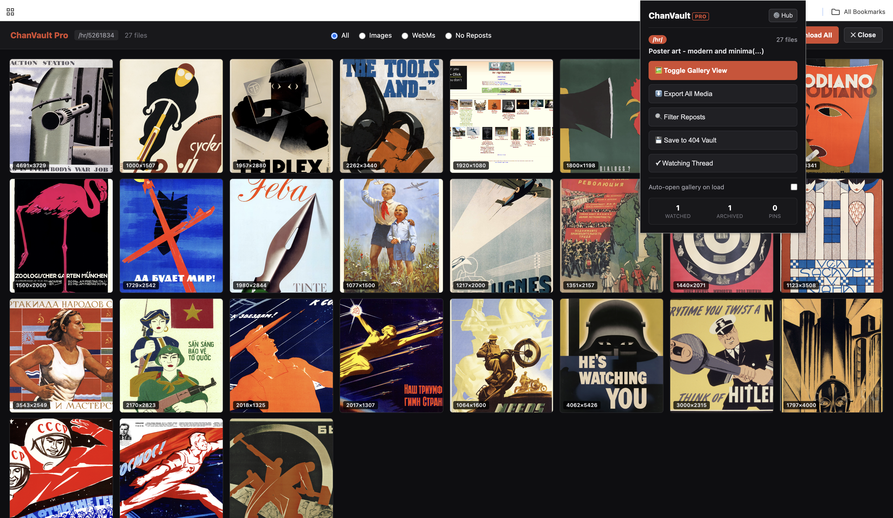
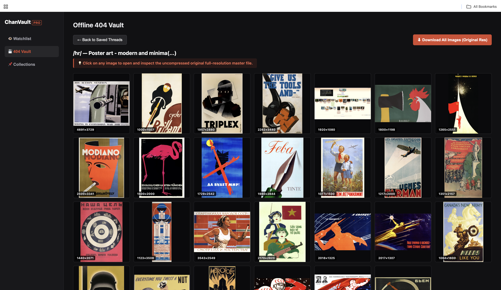
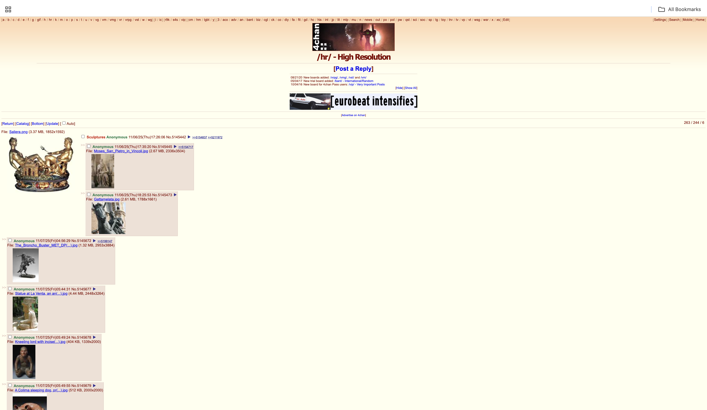

Gallery, without the clutter
Browse thread images and WebMs in a dedicated gallery, with a larger media viewer.
Skip the wall of posts. Browse images and WebMs in a clean gallery, download originals, and bring your collections together.
Available on the Chrome Web Store · Version 2.2.0



Useful tools in one place, so you can spend less time hunting through posts.
Browse thread images and WebMs in a dedicated gallery, with a larger media viewer.
Queue original files into a named folder instead of saving thumbnails one at a time.
Spot visually similar images with duplicate detection to make busy threads easier to scan.
Watch threads in the background and receive updates when new media appears.
Pin favorites into named collections and return to them from your dashboard.
Save thread details and media links locally. Download files separately to preserve them offline.
Get ChanVault Pro from the Chrome Web Store. Pro access is activated through ExtensionPay inside the extension.
See the extension checkout for current pricing and license terms.
Download files while they are available. The current vault stores thread information and media links locally, rather than offline copies of the image or video files. A saved link may stop working after the source disappears.
Watchlists, collections, and saved thread records are stored in your browser’s local extension storage. Clearing extension data or uninstalling the extension can remove them. Payment and license checks use ExtensionPay.
The extension checks watched threads for new media while the browser is running, with notifications and badge updates. Watching does not automatically download or archive the media.
Click “Add to Chrome” to open the official Chrome Web Store listing, then follow the store’s installation prompts. Pro features use ExtensionPay for payment and license checks.